🌲 卡斯卡迪亚
Cascadia · 设计：Randy Flynn · Flatout Games / Alderac Entertainment Group (AEG) 出版 · 1–4 人 · 官方英文规则书全文翻译（16 页 · AI 辅助机翻）
本页收录《卡斯卡迪亚》（Cascadia, 2021）的原版官方规则书全部 16 页（底本：AEG（英文版联合出版方）官方规则 PDF，Cascadia-Rules.pdf），逐页随图排列，点击任意图片即可放大查看；每页下方默认折叠了该页的 AI 辅助中文机翻对照，需要时可展开。规则内容归 Flatout Games / Alderac Entertainment Group (AEG) 及版权方所有，收录仅供个人学习查阅。
整理说明：机翻对照按本站术语口径对齐（牌库/手牌/回合/轮/板块/指示物等），PDF 图文混排页的语序可能与原书视觉顺序略有出入；规则细节请一律以页面上方原书页面为准。
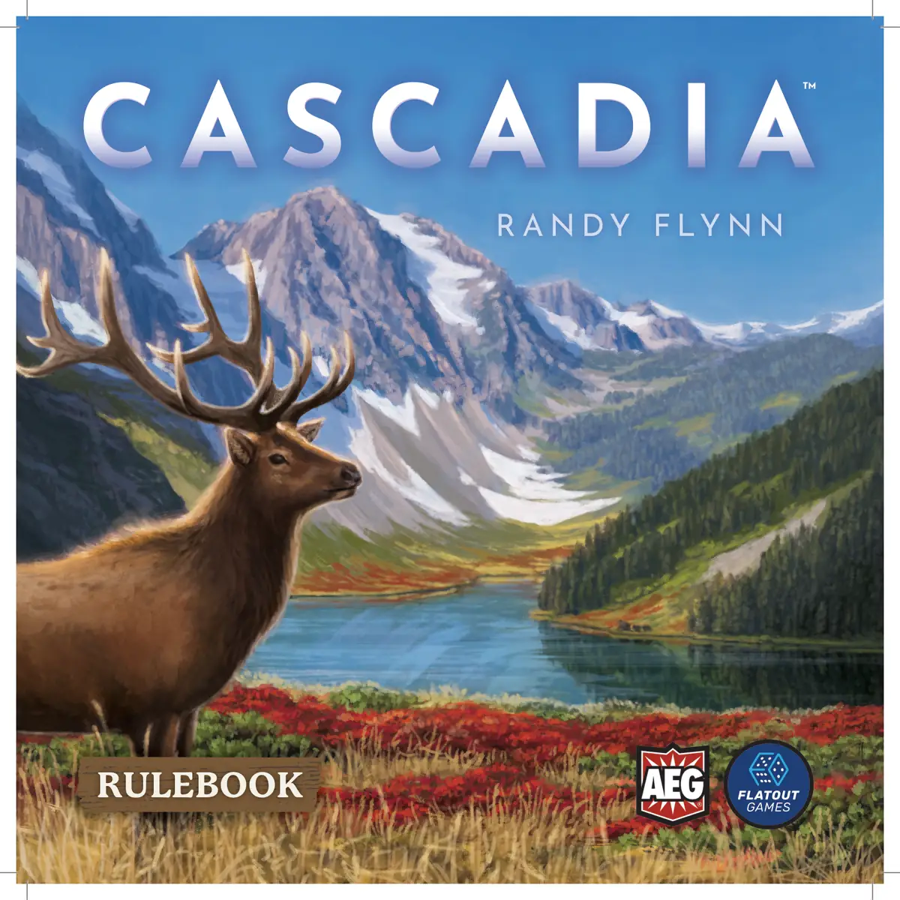
📝 第 1 页 AI 机翻对照（点击展开）
规则书
C A S C A D I A
R A N D Y F L Y N N
™
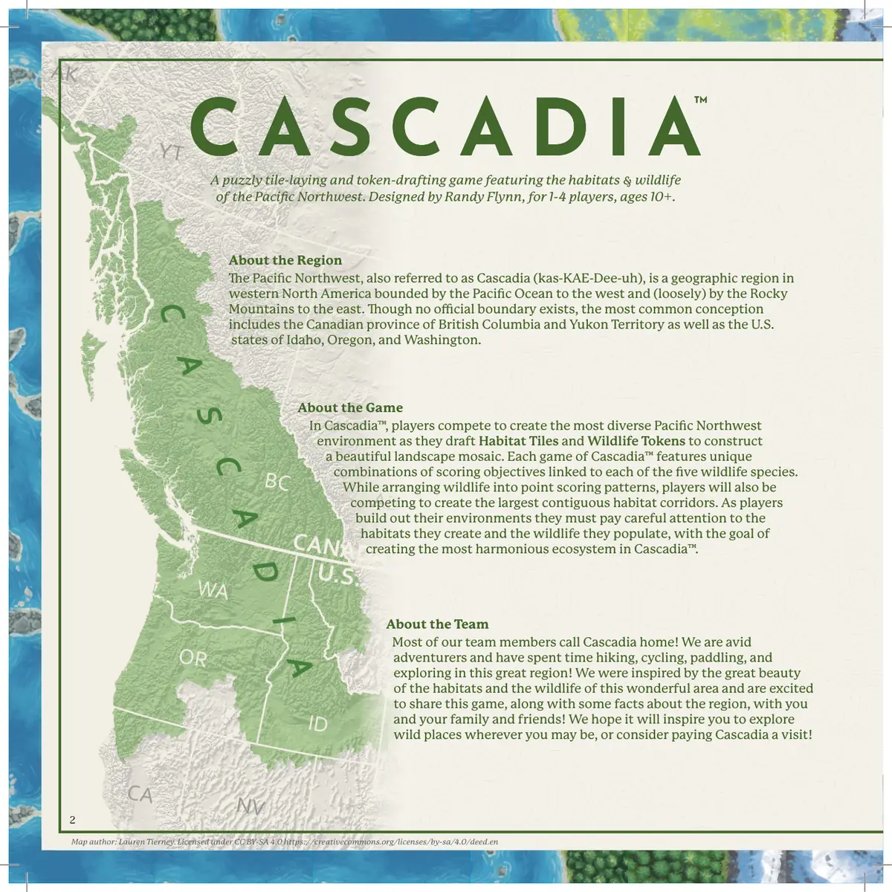
📝 第 2 页 AI 机翻对照（点击展开）
一款充满谜题的板块放置和指示物抽取游戏，特色为太平洋西北地区的栖息地与野生动物。由 Randy Flynn 设计，1-4名玩家，10岁以上。
在《卡斯卡迪亚™》(Cascadia™)中，玩家们竞争创造最具多样性的太平洋西北环境，他们通过抽取栖息地板块和野生动物指示物来构建一幅美丽的景观马赛克。每一局《卡斯卡迪亚™》都包含独特的评分目标组合，这些目标与五种野生动物物种中的每一个相关联。在将野生动物排列成计分模式的同时，玩家们还将竞争创造最大的连续栖息地走廊。当玩家们构建他们的环境时，他们必须密切关注自己创造的栖息地和填充的野生动物，目标是创造最和谐的生态系统。
我们的大多数团队成员都称卡斯卡迪亚为家园！我们是热切的冒险家，曾花时间在这个伟大地区徒步、骑行、划船和探索！我们被这个奇妙地区栖息地和野生动物的壮丽美景所启发，并很兴奋能与您和您的家人朋友分享这款游戏以及关于该地区的一些事实！我们希望它能激励您探索您所在地的野生地方，或者考虑访问卡斯卡迪亚！
太平洋西北地区，也被称为卡斯卡迪亚（kas-KAE-Dee-uh），是北美西部的一个地理区域，西临太平洋，东（大致）以落基山脉为界。虽然没有官方边界，但最常见的概念包括加拿大的不列颠哥伦比亚省和育空地区，以及美国的爱达荷州、俄勒冈州和华盛顿州。
关于该地区
关于游戏
关于团队
地图作者：Lauren Tierney。根据 CC BY-SA 4.0 许可 https://creativecommons.org/licenses/by-sa/4.0/deed.en
™
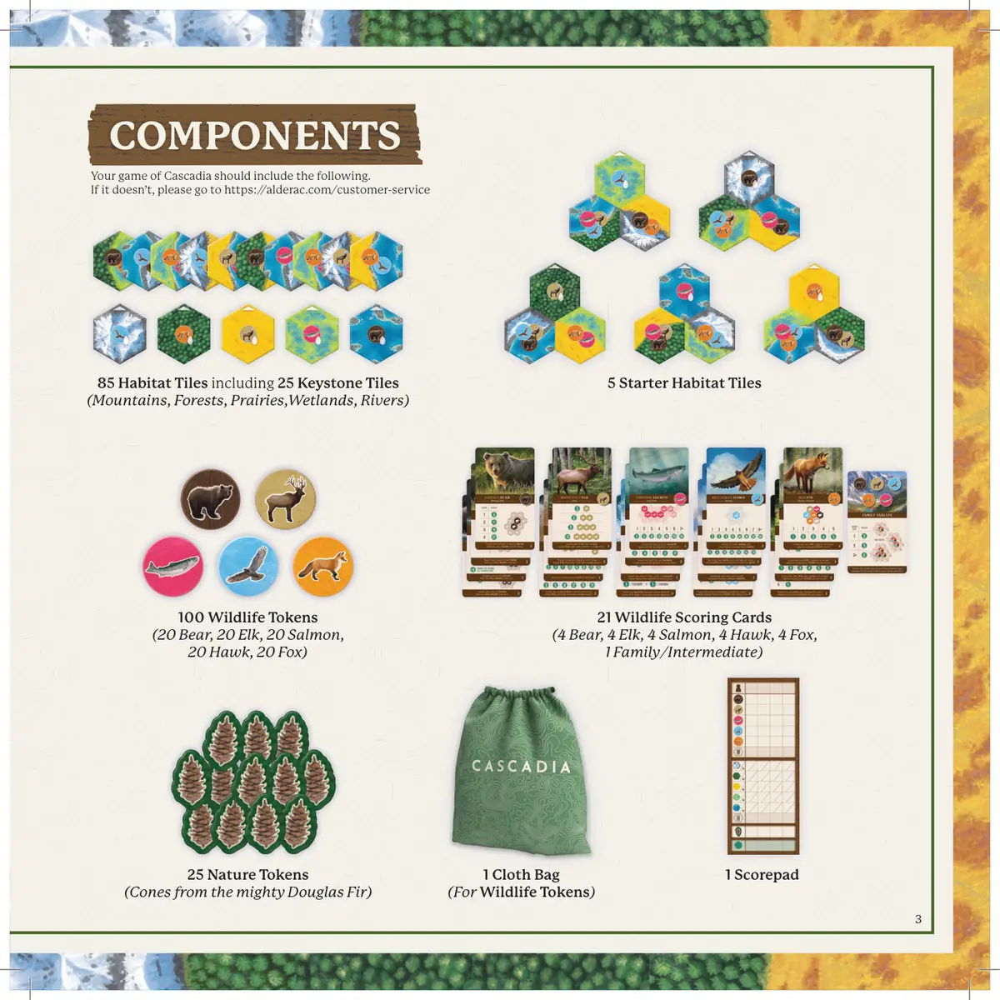
📝 第 3 页 AI 机翻对照（点击展开）
85个栖息地板块，包括25个基石板块
（山脉、森林、草原、湿地、河流）
您的《卡斯卡迪亚》游戏应包括以下内容。
如果缺少任何组件，请访问 https://alderac.com/customer-service
100个野生动物指示物
（20个熊、20个麋鹿、20个鲑鱼、20个鹰、20个狐狸）
组件
1个布袋
（用于存放野生动物指示物）
5个起始栖息地板块
21个野生动物计分卡
（4个熊、4个麋鹿、4个鲑鱼、4个鹰、4个狐狸、1个家庭/中级）
1个记分板
25个自然指示物
（来自壮大的道格拉斯冷杉的球果）
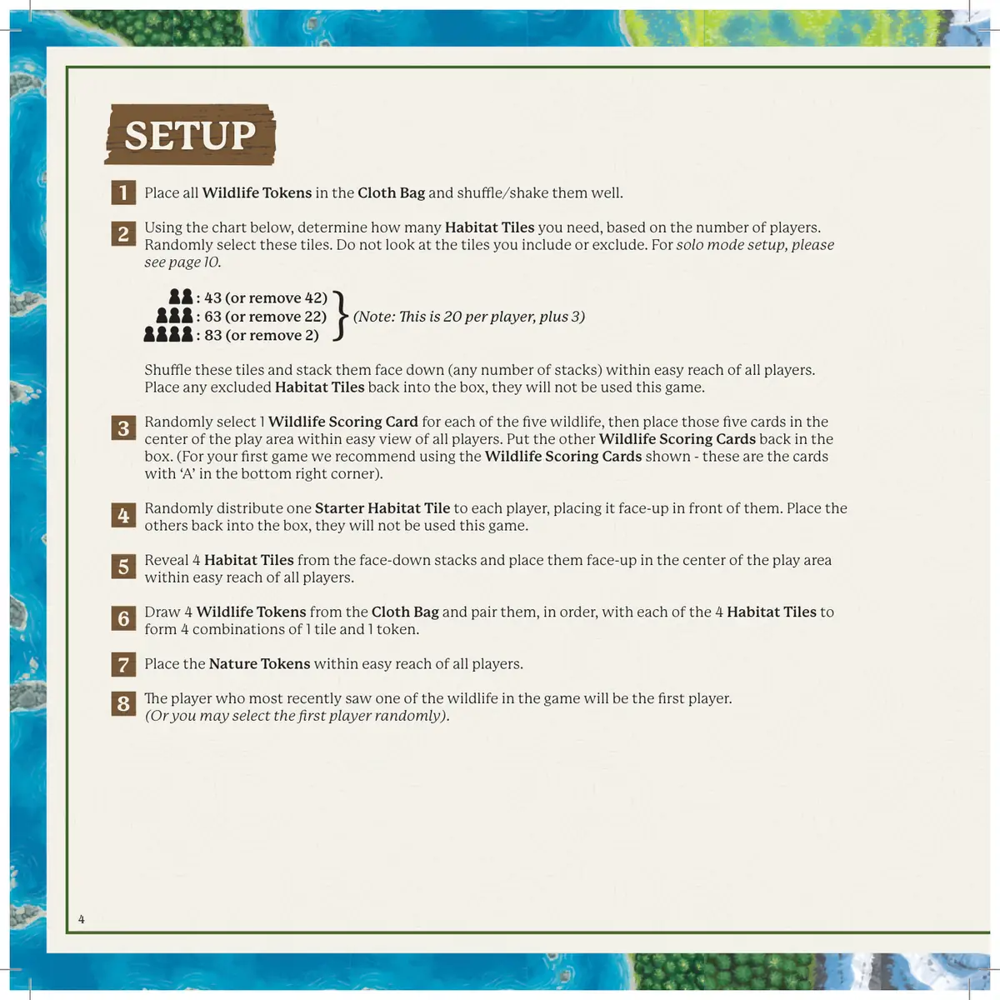
📝 第 4 页 AI 机翻对照（点击展开）
将所有野生动物指示物放入布袋中并充分摇晃/混合。
使用下表，根据玩家数量确定所需的栖息地板块数量。
随机选择这些板块。不要查看你包含或排除的板块。关于单人模式设置，请参见第10页。
: 43张（或移除42张）
: 63张（或移除22张） （注意：这是每人20张，外加3张）
: 83张（或移除2张）
将这些板块洗牌并面朝下堆叠（任意数量的堆叠）放在所有玩家容易触及的位置。
将任何被排除的栖息地板块放回盒中，它们在本局游戏中不会使用。
为五种野生动物各随机选择1张野生动物计分卡，然后将这五张卡放在游戏区域的中央，让所有玩家容易看到。将其他野生动物计分卡放回盒中。（对于你的第一局游戏，我们建议使用显示的野生动物计分卡——这些是右下角有'A'的卡牌）。
随机向每位玩家分发一张起始栖息地板块，面朝上放在他们面前。将其他板块放回盒中，它们在本局游戏中不会使用。
从面朝下的堆叠中揭示4张栖息地板块，并将它们面朝上放在游戏区域的中央，让所有玩家容易触及。
从布袋中抽取4张野生动物指示物，并依次将它们与4张栖息地板块配对，形成4个由1张板块和1个指示物组成的组合。
将自然指示物放在所有玩家容易触及的位置。
最近在游戏中看到过野生动物之一的玩家将成为起始玩家。
（或者你可以随机选择起始玩家）。
}
设置
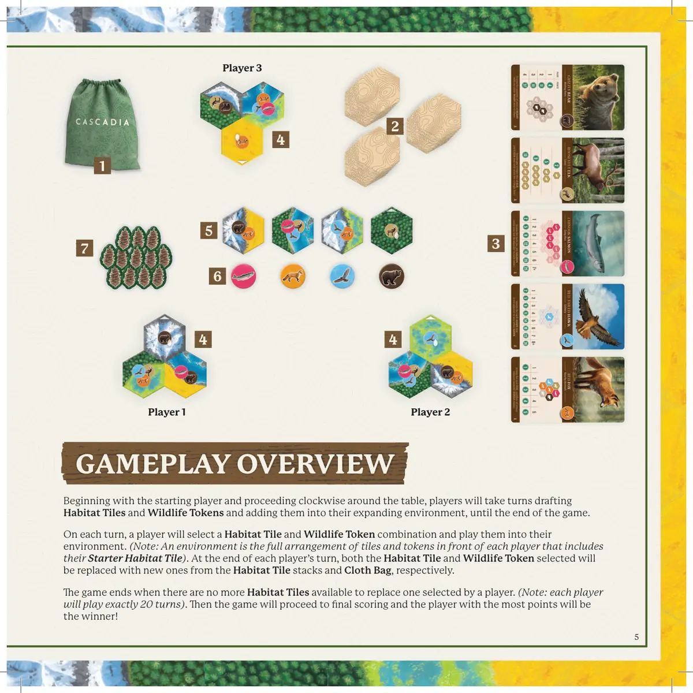
📝 第 5 页 AI 机翻对照（点击展开）
从起始玩家开始，按顺时针方向轮流进行，玩家将轮 drafting 栖息地板块和野生动物指示物，并将它们添加到他们不断扩展的环境中，直到游戏结束。
在每个回合，玩家将选择一个栖息地板块和野生动物指示物组合，并将它们放入自己的环境中。（注意：环境是指每位玩家面前板块和指示物的完整排列，包括他们的起始栖息地板块）。在每个玩家回合结束时，所选的栖息地板块和野生动物指示物将分别从栖息地板块堆叠和布袋中替换为新的板块。
当没有更多的栖息地板块可供玩家替换所选板块时，游戏结束。（注意：每位玩家将正好进行20个回合）。然后游戏将进入最终计分，分数最高的玩家将成为获胜者！
游戏概览
玩家 1
玩家 2
玩家 3
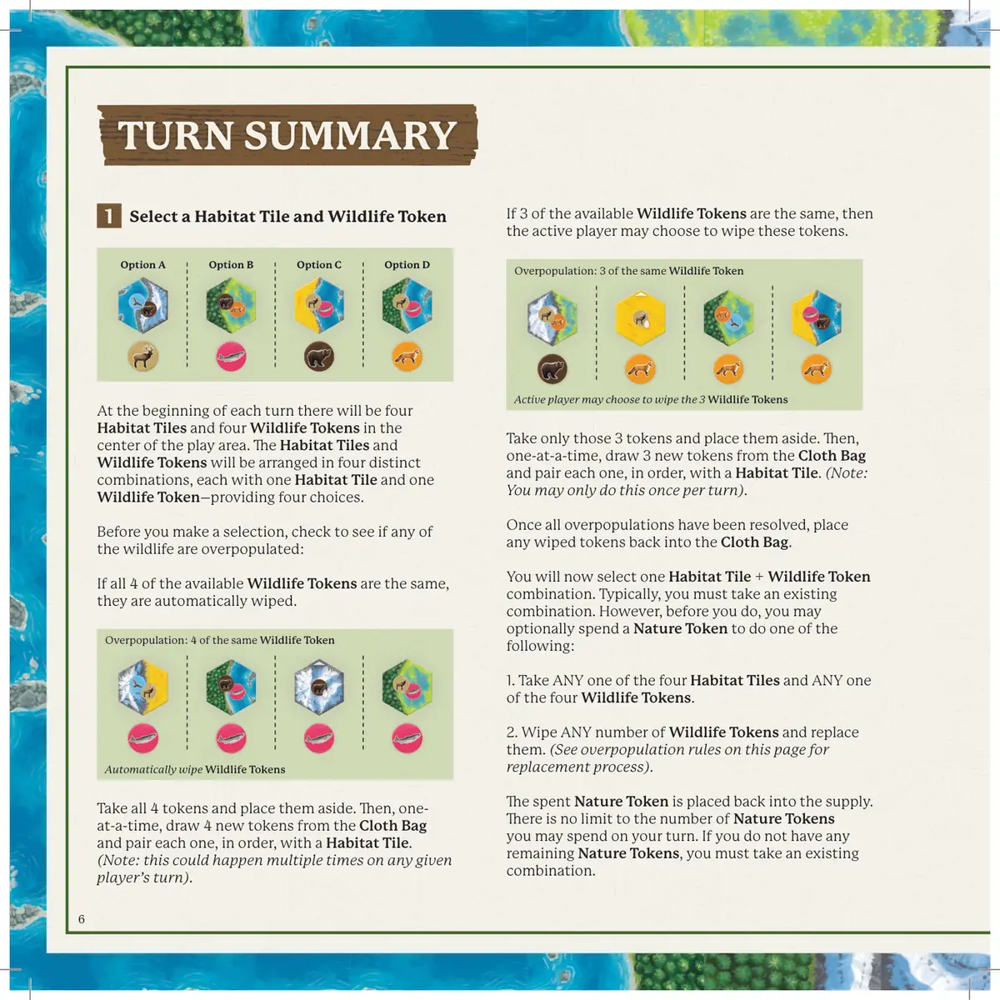
📝 第 6 页 AI 机翻对照（点击展开）
如果3个可用的野生动物指示物是相同的，那么当前玩家可以选择清除这些指示物。
只取这3个指示物并将它们放到一边。然后，一次一个地从布袋中摸出3个新指示物，并按顺序将每个指示物与一个栖息地板块配对。（注意：每回合你只能这样做一次）。
一旦所有过度拥挤问题都已解决，将任何被清除的指示物放回布袋中。
现在你将选择一个栖息地板块+野生动物指示物的组合。通常，你必须选择一个现有的组合。但是，在这样做之前，你可以选择花费一个自然指示物来执行以下操作之一：
1. 取四个栖息地板块中的任意一个和四个野生动物指示物中的任意一个。
2. 清除任意数量的野生动物指示物并替换它们。（请参阅本页的过度拥挤规则了解替换过程）。
花费的自然指示物被放回供应区。你可以在你的回合中花费任意数量的自然指示物。如果你没有任何剩余的自然指示物，你必须选择一个现有的组合。
在每个回合开始时，游戏区域中央将有四个栖息地板块和四个野生动物指示物。栖息地板块和野生动物指示物将被排列成四个不同的组合，每个组合包含一个栖息地板块和一个野生动物指示物——提供四个选择。
在你做出选择之前，检查是否有任何野生动物过度拥挤：
如果所有4个可用的野生动物指示物都相同，它们会被自动清除。
取走所有4个指示物并将它们放到一边。然后，一次一个地从布袋中摸出4个新指示物，并按顺序将每个指示物与一个栖息地板块配对。（注意：在任何玩家的回合中，这种情况可能发生多次）。
选择一个栖息地板块和野生动物指示物
回合总结
选项A
选项C
选项B
选项D
当前玩家可以选择清除3个野生动物指示物
过度拥挤：3个相同的野生动物指示物
自动清除野生动物指示物
过度拥挤：4个相同的野生动物指示物
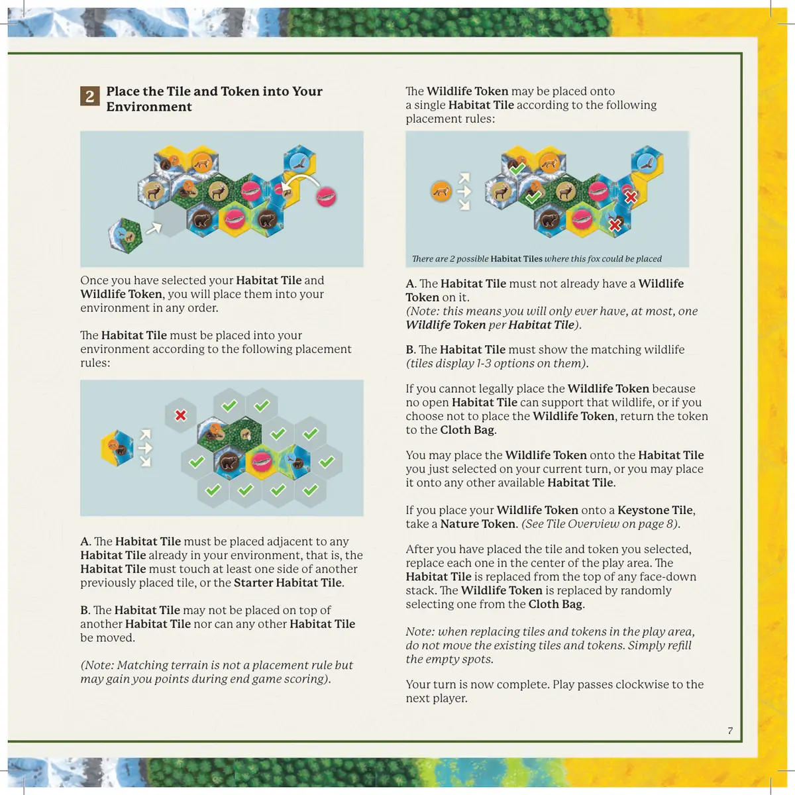
📝 第 7 页 AI 机翻对照（点击展开）
一旦你选择了你的栖息地板块和野生动物指示物，你就可以按任意顺序将它们放入你的环境中。
栖息地板块必须根据以下放置规则放入你的环境中：
A. 栖息地板块必须放置在你环境中已有的任何栖息地板块相邻处，也就是说，该栖息地板块必须与另一块先前放置的板块或起始栖息地板块至少接触一个边。
B. 栖息地板块不能放置在另一块栖息地板块之上，也不能移动任何其他栖息地板块。
（注意：地形匹配不是放置规则，但在游戏结束计分时可能会为你赢得分数）。
将板块和指示物放入你的环境中
野生动物指示物可以根据以下放置规则放置在单个栖息地板块上：
A. 栖息地板块上不能已经有野生动物指示物。
（注意：这意味着每块栖息地板块最多只能有一个野生动物指示物）。
B. 栖息地板块必须显示匹配的野生动物（板块上显示1-3个选项）。
如果你无法合法放置野生动物指示物，因为没有开放的栖息地板块可以支持该野生动物，或者你选择不放置野生动物指示物，请将该指示物放回布袋中。
你可以将野生动物指示物放置在你当前回合刚选择的栖息地板块上，或者放置在任何其他可用的栖息地板块上。
如果你将野生动物指示物放置在基石板块上，拿取一个自然指示物。（参见第8页的板块概览）。
在你放置了所选的板块和指示物后，将它们各自替换到游戏区域的中央。栖息地板块从任何面朝下的牌堆顶部替换。野生动物指示物通过从布袋中随机选择一个来替换。
注意：当替换游戏区域中的板块和指示物时，不要移动现有的板块和指示物。只需填补空位即可。
你的回合现在完成。游戏按顺时针方向传递给下一位玩家。
这只狐狸可以放置在2个可能的栖息地板块上
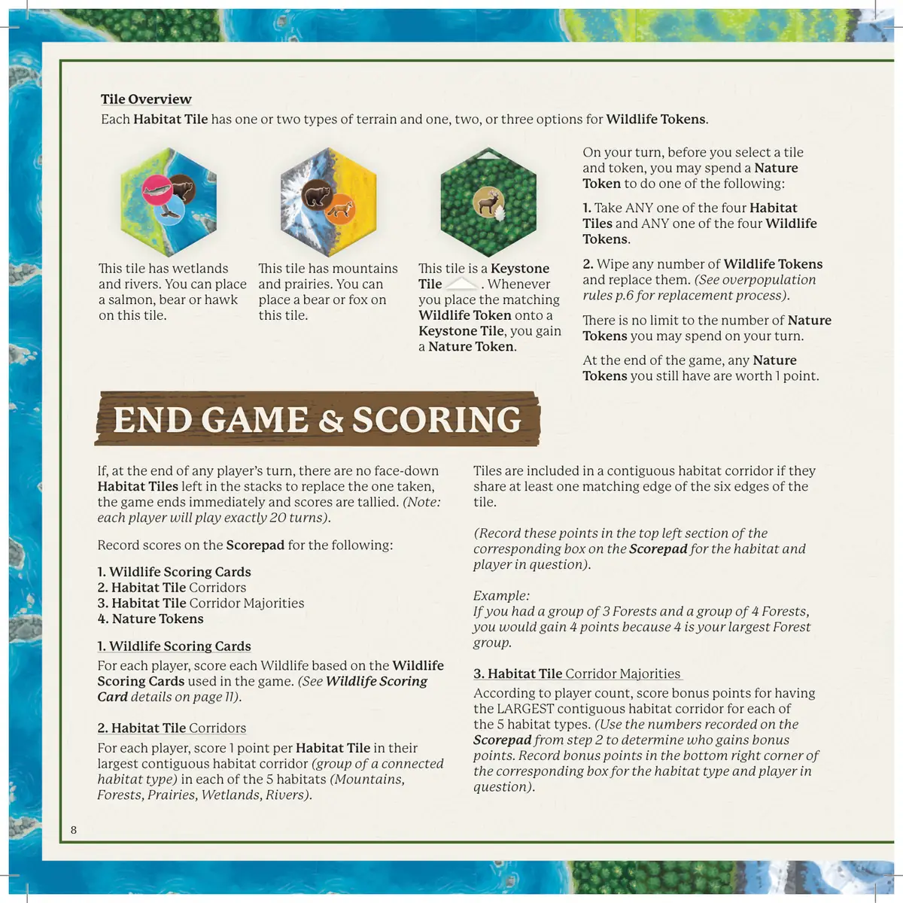
📝 第 8 页 AI 机翻对照（点击展开）
板块概览
每个栖息地板块有一种或两种地形，以及一个、两个或三个野生动物指示物的选项。
如果在任何玩家的回合结束时，牌堆中不再有面朝下的栖息地板块可以替换被拿走的那一个，游戏立即结束并计算分数。（注意：每位玩家将正好进行20个回合）。
在记分板上记录以下分数：
1. 野生动物计分卡
2. 栖息地板块走廊
3. 栖息地走廊多数
4. 自然指示物
1. 野生动物计分卡
对于每位玩家，根据游戏中使用的野生动物计分卡为每种野生动物计分。（参见第11页的野生动物计分卡详情）。
2. 栖息地板块走廊
对于每位玩家，在5种栖息地（山脉、森林、草原、湿地、河流）中的每一种，为其最大的连续栖息地走廊（相连的同类型栖息地群体）中的每个栖息地板块计1分。
板块包含在连续栖息地走廊中，如果它们共享板块六条边中的至少一条匹配边。
（将这些分数记录在记分板上相应栖息地和玩家对应框的左上部分）。
示例：
如果你有一组3个森林和一组4个森林，你将获得4分，因为4是你最大的森林群体。
3. 栖息地走廊多数
根据玩家数量，为在5种栖息地类型中的每一种拥有最大连续栖息地走廊的玩家计分奖励。（使用记分板上第2步记录的数字来确定谁获得奖励分数。将奖励分数记录在相应栖息地类型和玩家对应框的右下角）。
游戏结束与计分
这个板块有湿地和河流。你可以在这个板块上放置一条鲑鱼、一头熊或一只鹰。
这个板块有山脉和草原。你可以在这个板块上放置一头熊或一只狐狸。
这是一个关键板块(Keystone Tile)。每当你在关键板块上放置匹配的野生动物指示物时，你获得一个自然指示物。
在你的回合中，在你选择板块和指示物之前，你可以花费一个自然指示物来执行以下操作之一：
1. 拿取四个栖息地板块中的任意一个和四个野生动物指示物中的任意一个。
2. 擦除任意数量的野生动物指示物并替换它们。（替换过程参见过度拥挤规则，第6页）。
在你的回合中，你可以花费的自然指示物数量没有限制。
游戏结束时，你仍然拥有的任何自然指示物都值1分。
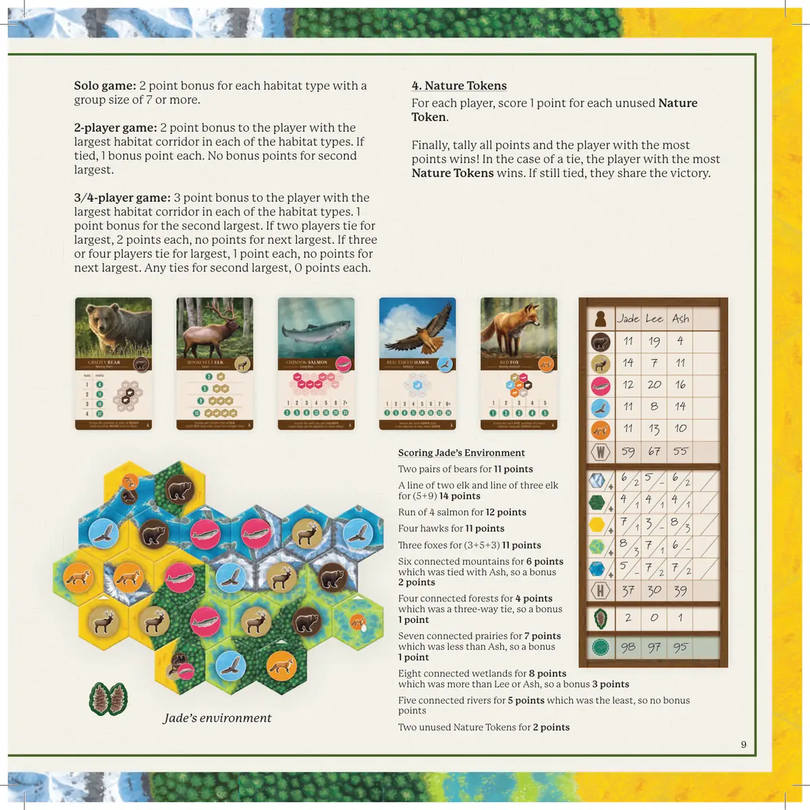
📝 第 9 页 AI 机翻对照（点击展开）
单人模式：每种栖息地类型中，群体大小为7或以上的获得2分奖励。
2人游戏：每种栖息地类型中，拥有最大栖息地走廊的玩家获得2分奖励。如果平局，各获得1分奖励。第二大没有奖励分。
3/4人游戏：每种栖息地类型中，拥有最大栖息地走廊的玩家获得3分奖励。第二大获得1分奖励。如果两名玩家并列最大，各得2分，下一名不得分。如果三名或四名玩家并列最大，各得1分，下一名不得分。任何第二大平局，各得0分。
4. 自然指示物
每位玩家，每个未使用的自然指示物得1分。
最后，计算所有分数，分数最高的玩家获胜！如果平局，拥有最多自然指示物的玩家获胜。如果仍然平局，他们共享胜利。
计分：玉的环境
两对熊，11分
一行麋鹿和一行三只麋鹿，(5+9)14分
四条鲑鱼连排，12分
四只鹰，11分
三只狐狸，(3+5+3)11分
六座相连的山，6分
与艾什并列，因此奖励2分
四片相连的森林，4分
三方平局，因此奖励1分
七片相连的草原，7分
少于艾什，因此奖励1分
八片相连的湿地，8分
多于李或艾什，因此奖励3分
五条相连的河流，5分，是最少的，因此没有奖励分
两个未使用的自然指示物，2分
玉的环境
玉 李 艾什
- - -
- - -
- - -
- - -
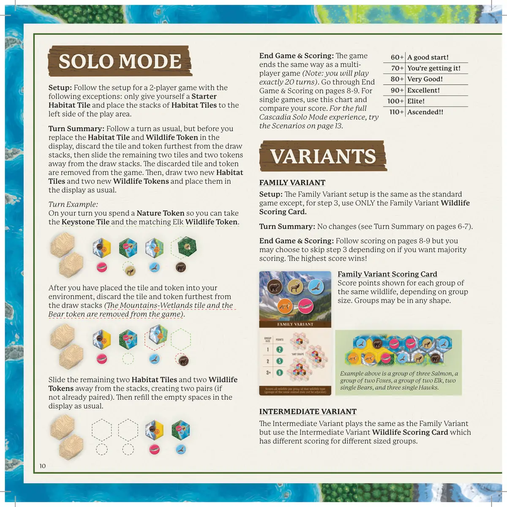
📝 第 10 页 AI 机翻对照（点击展开）
单人模式
变体
家庭变体
设置：家庭变体的设置与标准游戏相同，但在第3步中，仅使用家庭变体野生动物计分卡。
回合总结：无更改（参见第6-7页的回合总结）。
游戏结束与计分：遵循第8-9页的计分规则，但你可以选择跳过第3步，取决于你是否想要多数派计分。最高分获胜！
游戏结束与计分：游戏结束方式与多人游戏相同（注意：你将正好进行20个回合）。进行第8-9页的游戏结束与计分。对于单人游戏，使用此图表并比较你的分数。要获得完整的卡斯卡迪亚单人模式体验，请尝试第13页的场景。
中级变体
中级变体的玩法与家庭变体相同，但使用中级变体野生动物计分卡，该卡对不同大小的群体有不同的计分规则。
设置：遵循2人游戏的设置，但有以下例外：只给自己一个起始栖息地板块，并将栖息地板块堆放在游戏区域的左侧。
回合总结：按正常方式进行一个回合，但在替换展示区的栖息地板块和野生动物指示物之前，丢弃远离牌堆的板块和指示物，然后将剩余的两个板块和两个指示物远离牌堆滑动。被丢弃的板块和指示物从游戏中移除。然后，摸两张新的栖息地板块和两张新的野生动物指示物，并按常规方式放入展示区。
回合示例：
在你的回合中，你花费一个自然指示物，以便能够拿到基石板块和匹配的麋鹿野生动物指示物。当你将板块和指示物放入你的环境后，丢弃远离牌堆的板块和指示物（山地-湿地板块和熊指示物从游戏中移除）。
将剩余的两个栖息地板块和两个野生动物指示物远离牌堆滑动，形成两对（如果尚未配对）。然后按常规方式填充展示区中的空位。
家庭变体计分卡
根据相同野生动物的群体大小计分所示分数。群体可以是任何形状。
上例是一个由三条鲑鱼、两只狐狸、两只麋鹿、两只单独的熊和三只单独的鹰组成的群体。
60+
70+
80+
90+
100+
110+
良好的开始！
你正在掌握它！
非常好！
优秀！
精英！
升华！！
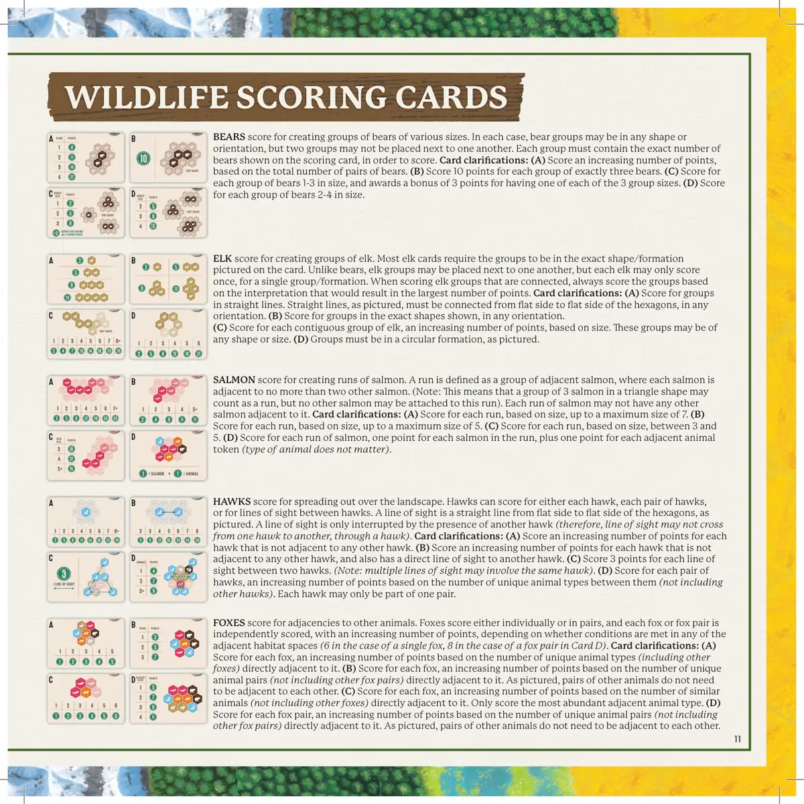
📝 第 11 页 AI 机翻对照（点击展开）
野生动物计分牌
熊通过创建不同大小的熊群来计分。在每种情况下，熊群可以是任何形状或方向，但两个熊群不能彼此相邻。每个群组必须包含计分牌上显示的确切数量的熊，才能计分。卡片说明：(A) 根据熊对的总数，计递增的分数。(B) 每个恰好三只熊的群组计10分。(C) 每个大小为1-3的熊群计分，并且拥有每种3个群组大小中的一个可获得3分奖励。(D) 每个大小为2-4的熊群计分。
鲑鱼通过创建鲑鱼序列来计分。序列被定义为相邻的鲑鱼群组，其中每只鲑鱼最多与两只其他鲑鱼相邻。（注意：这意味着三角形形状的三只鲑鱼群组可以算作一个序列，但没有其他鲑鱼可以附加到这个序列上）。每个鲑鱼序列不能有任何其他鲑鱼与之相邻。卡片说明：(A) 根据大小为每个序列计分，最大大小为7。(B) 根据大小为每个序列计分，最大大小为5。(C) 根据大小为每个序列计分，大小在3到5之间。(D) 每个鲑鱼序列计分，序列中的每只鲑鱼计1分，加上每个相邻的动物指示物1分（动物类型无关紧要）。
麋鹿通过创建麋鹿群组来计分。大多数麋鹿卡片要求群组必须处于卡片上显示的确切形状/排列。与熊不同，麋鹿群组可以彼此相邻，但每只麋鹿只能计一次分，属于单个群组/排列。当计分相连的麋鹿群组时，总是基于能产生最多分数的解释来计分。卡片说明：(A) 为直线上的群组计分。直线如图片所示，必须从六边形的平边连接到平边，可以是任何方向。(B) 为所示的确切形状的群组计分，可以是任何方向。(C) 为每个连续的麋鹿群组计分，根据大小计递增的分数。这些群组可以是任何形状或大小。(D) 群组必须处于如图所示的圆形排列。
鹰通过在景观上分散来计分。鹰可以为每只鹰、每对鹰或鹰之间的视线计分。视线是从六边形的平边到平边的直线，如图所示。视线仅被另一只鹰的存在所中断（因此，视线不能穿过一只鹰从一只鹰到另一只鹰）。卡片说明：(A) 为每只不与任何其他鹰相邻的鹰计递增的分数。(B) 为每只不与任何其他鹰相邻的鹰计递增的分数。
与任何其他鹰相邻，并且也能直接看到另一只鹰。(C) 为每两条鹰之间的视线得3分。（注意：多条视线可能涉及同一只鹰）。(D) 为每对鹰根据它们之间独特的动物类型数量（不包括其他鹰）获得递增的分数。每只鹰只能属于一对。
狐狸通过与其他动物的相邻关系得分。狐狸可以单独或成对得分，每只狐狸或狐狸对独立计分，根据相邻栖息地空间（在卡牌D中，单只狐狸为6个，狐狸对为8个）是否满足条件获得递增的分数。卡牌说明：(A) 为每只狐狸根据直接相邻的独特动物类型数量（包括其他狐狸）获得递增的分数。(B) 为每只狐狸根据直接相邻的独特动物对数量（不包括其他狐狸对）获得递增的分数。如图所示，其他动物的配对不需要彼此相邻。(C) 为每只狐狸根据直接相邻的相似动物数量（不包括其他狐狸）获得递增的分数。只计分最丰富的相邻动物类型。(D) 为每对狐狸根据直接相邻的独特动物对数量（不包括其他狐狸对）获得递增的分数。如图所示，其他动物的配对不需要彼此相邻。
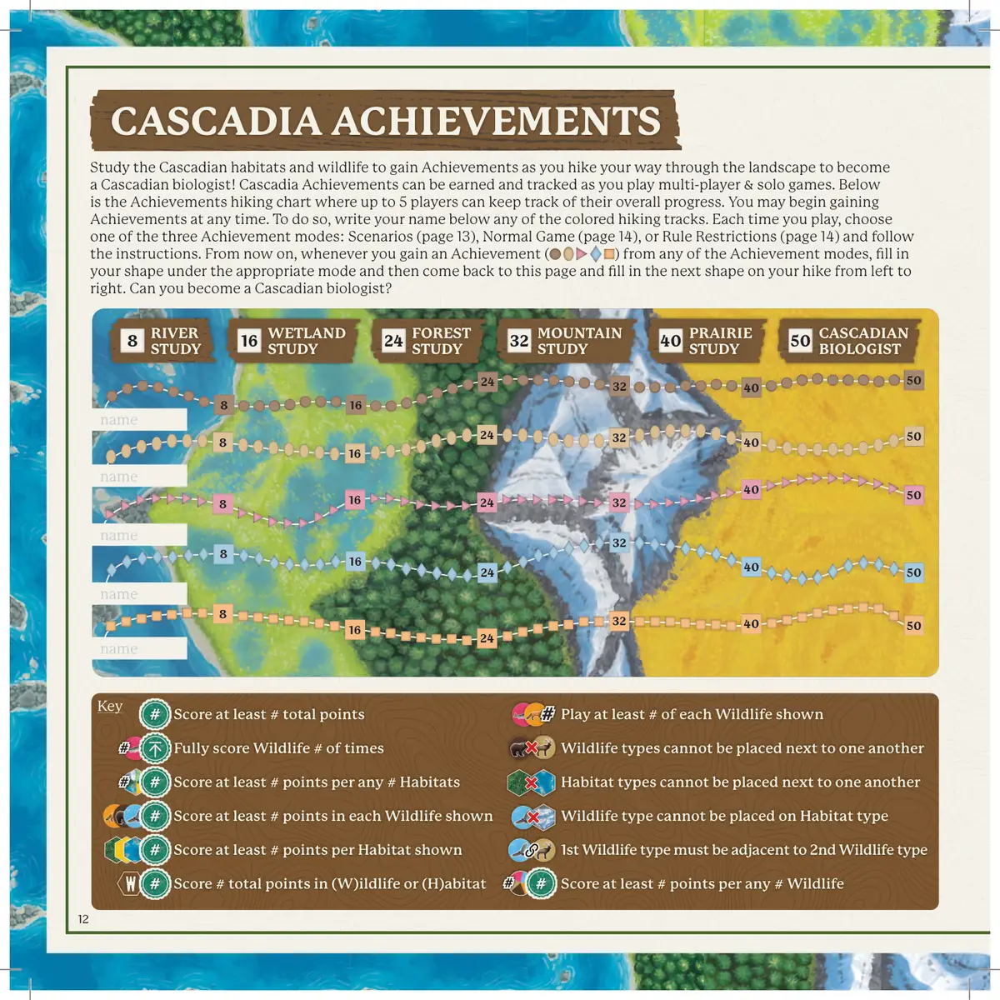
📝 第 12 页 AI 机翻对照（点击展开）
卡斯卡迪亚成就
研究卡斯卡迪亚的栖息地和野生动物，在你穿越景观的徒步旅行中成为一位卡斯卡迪亚生物学家！在多人和单人游戏中都可以获得并追踪卡斯卡迪亚成就。以下是成就徒步旅行图表，最多5名玩家可以追踪他们的整体进度。你可以随时开始获得成就。为此，请在任何一条彩色徒步旅行轨道下方写下你的名字。每次游戏时，选择三种成就模式之一：情景（第13页）、普通游戏（第14页）或规则限制（第14页），并遵循说明。从此以后，无论你从任何成就模式中获得成就（ ），请在相应模式下填满你的形状，然后回到此页，从左到右填满你徒步旅行轨道上的下一个形状。你能成为一位卡斯卡迪亚生物学家吗？
姓名
姓名
姓名
姓名
姓名
河流
研究
湿地
研究
山脉
研究
草原
研究
卡斯卡迪亚
生物学家
森林
研究
获得至少 # 总分
完整计分野生动物 # 次
在任何 # 个栖息地中获得至少 # 分
在每种显示的野生动物中获得至少 # 分
在每种显示的栖息地中获得至少 # 分
在 (W)ildlife 或 (H)abitat 中获得 # 总分
至少放置 # 次每种显示的野生动物
野生动物类型不能彼此相邻
栖息地类型不能彼此相邻
野生动物类型不能放置在栖息地类型上
第1种野生动物类型必须与第2种野生动物类型相邻
在任何 # 种野生动物中获得至少 # 分
#
#
#
#
#
W #
图例
#
#
#
#
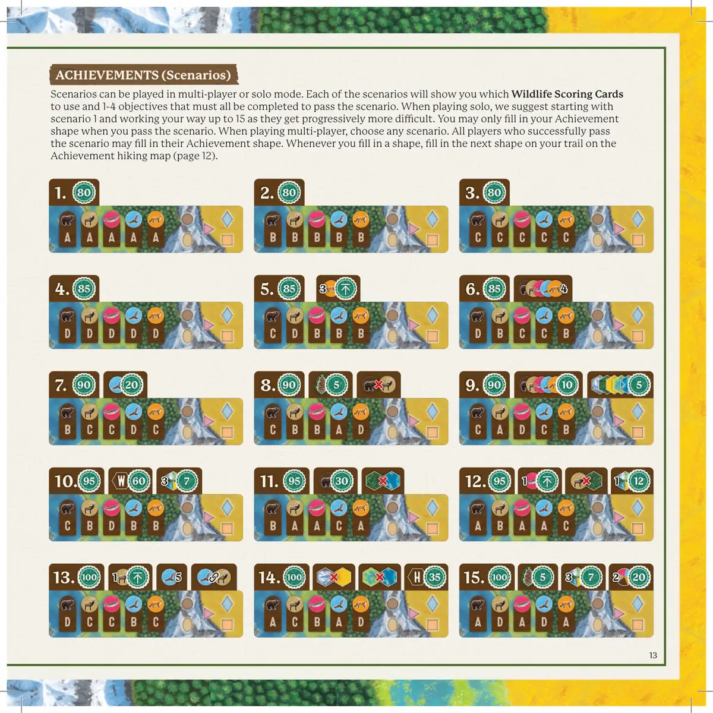
📝 第 13 页 AI 机翻对照（点击展开）
成就（情景）
情景可以在多人或单人模式下进行。每个情景会告诉你使用哪些野生动物计分卡，以及1-4个必须全部完成才能通过情景的目标。单人游戏时，我们建议从情景1开始，逐步进行到15，因为它们难度逐渐增加。只有通过情景时，你才能填满你的成就形状。多人游戏时，可以选择任何情景。所有成功通过情景的玩家都可以填满他们的成就形状。每当填满一个形状时，请在成就徒步旅行地图（第12页）上填满你轨道上的下一个形状。
1.
- 85
- 80
- 80
- 85
5.
7.
W 60
- 90
- 90
- 95
11.
- 95
H 35
- 100
- 100
15.
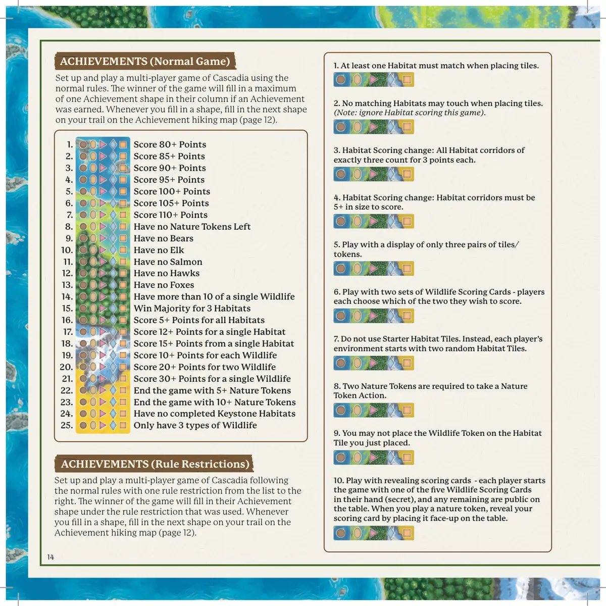
📝 第 14 页 AI 机翻对照（点击展开）
成就（普通游戏）
设置并使用普通规则进行多人卡斯卡迪亚游戏。如果获得了成就，游戏的获胜者将在其成就列中最多填写一个成就形状。每当您填写一个形状时，请在成就徒步地图（第12页）上沿着您的路径填写下一个形状。
成就（规则限制）
设置并使用普通规则进行多人卡斯卡迪亚游戏，但需遵循右侧列表中的一项规则限制。游戏的获胜者将填写在所使用的规则限制下的成就形状。每当您填写一个形状时，请在成就徒步地图（第12页）上沿着您的路径填写下一个形状。
获得80+分数
获得85+分数
获得90+分数
获得95+分数
获得100+分数
获得105+分数
获得110+分数
没有自然指示物剩余
没有熊
没有麋鹿
没有鲑鱼
没有鹰
没有狐狸
拥有超过10个同一种野生动物
为3个栖息地赢得多数
所有栖息地获得5+分数
单个栖息地获得12+分数
从单个栖息地获得15+分数
每种野生动物获得10+分数
两种野生动物获得20+分数
单个野生动物获得30+分数
游戏结束时拥有5+自然指示物
游戏结束时拥有10+自然指示物
没有完成的基石栖息地
只有3种野生动物
1.
2.
3.
4.
5.
6.
7.
8.
9.
10.
11.
12.
13.
14.
15.
16.
17.
18.
19.
20.
21.
22.
23.
24.
25.
- 放置板块时，至少必须有一个栖息地匹配。
- 放置板块时，没有匹配的栖息地可以相邻。（注意：本游戏忽略栖息地计分）。
3. 栖息地计分变更：所有恰好三个长度的栖息地走廊每个计3分。
4. 栖息地计分变更：栖息地走廊必须长度为5+才能计分。
5. 使用只有三对板块/指示物的展示进行游戏。
6. 使用两套野生动物计分卡 - 玩家各自选择他们希望计分的两套中的一套。
- 不使用起始栖息地板块。相反，每位玩家的环境以两个随机栖息地板块开始。
8. 需要两个自然指示物才能执行自然指示物行动。
9. 您不能将野生动物指示物放置在您刚刚放置的栖息地板块上。
10. 使用公开计分卡进行游戏 - 每位玩家在游戏开始时手中持有五张野生动物计分卡中的一张（保密），其余的则公开放在桌上。当您执行自然指示物行动时，通过将您的计分卡正面朝上放在桌上来公开它。
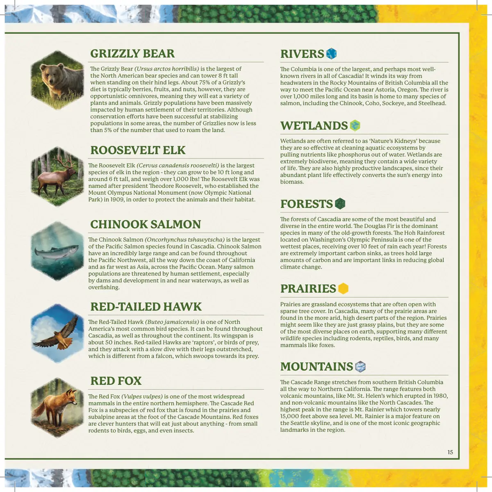
📝 第 15 页 AI 机翻对照（点击展开）
灰熊（Ursus arctos horribilis）是北美熊类中体型最大的物种，当它们用后腿站立时可以高达8英尺。灰熊约75%的饮食通常由浆果、水果和坚果组成，然而它们是机会主义杂食动物，意味着它们会食用各种植物和动物。灰熊种群因人类在其领地的定居而受到巨大影响。尽管保护努力在一些地区已成功稳定了种群数量，但现在灰熊的数量已不足曾经在这片土地上漫游数量的5%。
灰熊
罗斯福麋鹿（Cervus canadensis roosevelti）是该地区最大的麋鹿物种——它们可以长到10英尺长，约6英尺高，体重超过1,000磅！罗斯福麋鹿以总统西奥多·罗斯福命名，他于1909年建立了奥林匹克山国家纪念碑（现在的奥林匹克国家公园），以保护这些动物及其栖息地。
罗斯福麋鹿
帝王鲑（Oncorhynchus tshawytscha）是卡斯卡迪亚地区发现的太平洋鲑鱼中体型最大的物种。帝王鲑的活动范围极其广阔，可以在整个太平洋西北地区找到，一直延伸到加利福尼亚海岸，甚至远至太平洋对岸的亚洲。许多鲑鱼种群因人类定居而受到威胁，特别是水坝和在水道内及附近的发展，以及过度捕捞。
帝王鲑
红尾鵟（Buteo jamaicensis）是北美最常见的鸟类物种之一。它可以在卡斯卡迪亚地区以及整个大陆上找到。其翼展约为50英寸。红尾鵟是"猛禽"或食肉鸟类，它们会伸展双腿进行缓慢俯冲攻击，这与隼类不同，隼类是俯冲向猎物的。
红尾鵟
红狐（Vulpes vulpes）是整个北半球分布最广的哺乳动物之一。喀斯喀特红狐是红狐的一个亚种，生活在喀斯喀特山脉山脚的草原和高山地区。红狐是聪明的猎手，几乎什么都吃——从小型啮齿动物到鸟类、蛋，甚至是昆虫。
红狐
喀斯喀特山脉从不列颠哥伦比亚南部一直延伸到加利福尼亚北部。该山脉既有火山山峰，如1980年爆发的圣海伦斯山，也有非火山山峰，如北喀斯喀特山脉。该山脉的最高峰是雷尼尔山，海拔近15,000英尺。雷尼尔山是西雅图天际线的主要特征，也是该地区最具标志性的地理地标之一。
山脉
湿地常被称为"大自然的肾脏"，因为它们在净化水生生态系统方面非常有效，能从水中去除磷等营养物质。湿地具有极高的生物多样性，意味着它们含有各种各样的生命形式。它们也是生产力极高的景观，因为它们丰富的植物有效地将太阳能转化为生物质。
湿地
卡斯卡迪亚的森林是全世界最美、最多样化的森林之一。花旗松是许多原始森林中的主要树种。位于华盛顿奥林匹克半岛的霍雨林是最湿润的地方之一，每年接收超过10英尺的降雨！森林是极其重要的碳汇，因为树木储存了大量碳，并且在减少全球气候变化方面是重要的环节。
森林
哥伦比亚河是卡斯卡迪亚最大、也许最著名的河流之一！它蜿蜒流经不列颠哥伦比亚落基山脉的源头，一直延伸到俄勒冈州阿斯托里亚附近与太平洋交汇。这条河超过1,000英里长，其流域是许多鲑鱼物种的家园，包括奇努克鲑、银鲑、红鲑和硬头鳟。
河流
草原是草原生态系统，通常开阔且树木稀疏。在卡斯卡迪亚，许多草原地区位于该区域更干旱的高沙漠部分。草原可能看起来只是长满草的平原，但它们是地球上最多样化的地方之一，支持许多不同的野生动物物种，包括啮齿动物、爬行动物、鸟类以及狐狸等许多哺乳动物。
草原
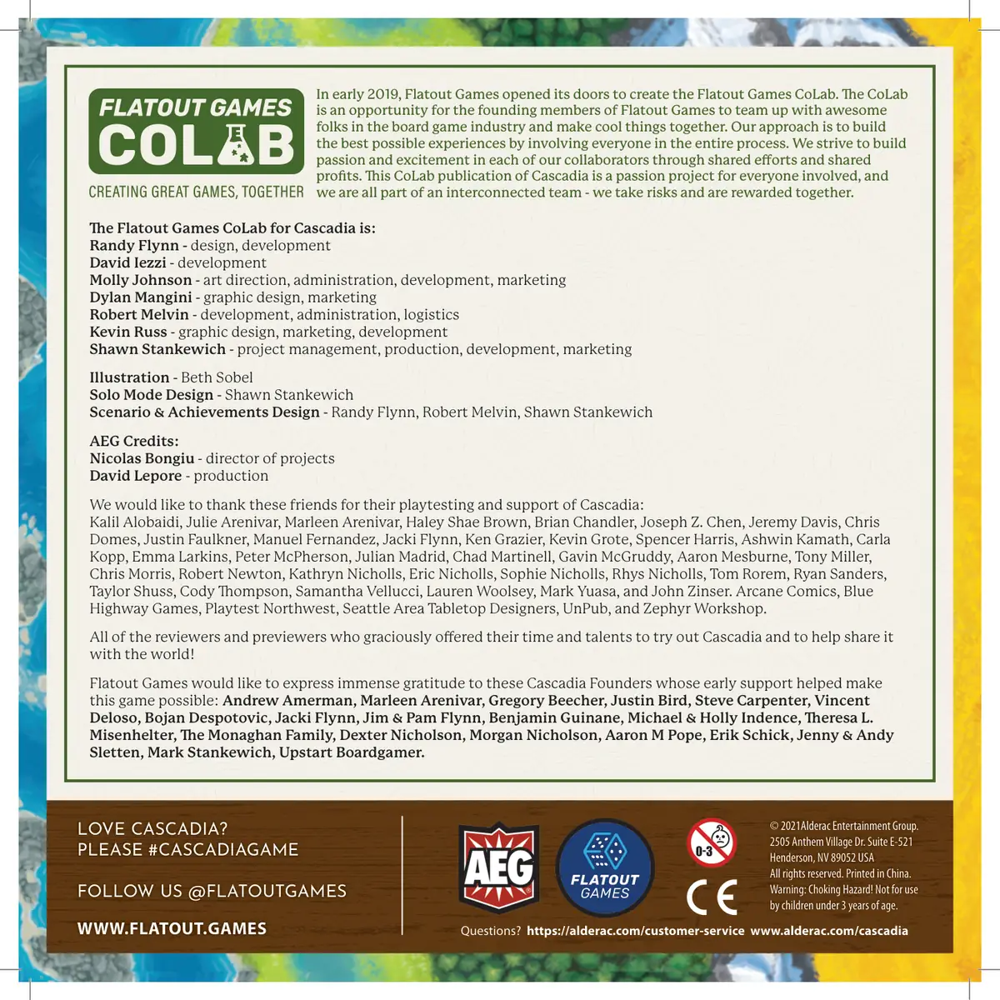
📝 第 16 页 AI 机翻对照（点击展开）
《卡斯科迪亚》(Cascadia) 的 Flatout Games 合作项目团队为：
Randy Flynn - 设计、开发
David Iezzi - 开发
Molly Johnson - 艺术指导、行政、开发、营销
Dylan Mangini - 平面设计、营销
Robert Melvin - 开发、行政、物流
Kevin Russ - 平面设计、营销、开发
Shawn Stankewich - 项目管理、制作、开发、营销
插图 - Beth Sobel
单人模式设计 - Shawn Stankewich
场景与成就设计 - Randy Flynn, Robert Melvin, Shawn Stankewich
AEG 致谢：
Nicolas Bongiu - 项目总监
David Lepore - 制作
我们要感谢这些朋友对《卡斯科迪亚》的测试游戏和支持：
Kalil Alobaidi, Julie Arenivar, Marleen Arenivar, Haley Shae Brown, Brian Chandler, Joseph Z. Chen, Jeremy Davis, Chris
Domes, Justin Faulkner, Manuel Fernandez, Jacki Flynn, Ken Grazier, Kevin Grote, Spencer Harris, Ashwin Kamath, Carla
Kopp, Emma Larkins, Peter McPherson, Julian Madrid, Chad Martinell, Gavin McGruddy, Aaron Mesburne, Tony Miller,
Chris Morris, Robert Newton, Kathryn Nicholls, Eric Nicholls, Sophie Nicholls, Rhys Nicholls, Tom Rorem, Ryan Sanders,
Taylor Shuss, Cody Thompson, Samantha Vellucci, Lauren Woolsey, Mark Yuasa, and John Zinser. Arcane Comics, Blue
Highway Games, Playtest Northwest, Seattle Area Tabletop Designers, UnPub, and Zephyr Workshop.
所有那些慷慨地抽出时间和才华来尝试《卡斯科迪亚》并帮助向世界分享它的评论者和预览者！
Flatout Games 想向这些《卡斯科迪亚》创始人表达深深的感谢，他们的早期支持使这款游戏成为可能：Andrew Amerman, Marleen Arenivar, Gregory Beecher, Justin Bird, Steve Carpenter, Vincent
Deloso, Bojan Despotovic, Jacki Flynn, Jim & Pam Flynn, Benjamin Guinane, Michael & Holly Indence, Theresa L.
Misenhelter, The Monaghan Family, Dexter Nicholson, Morgan Nicholson, Aaron M Pope, Erik Schick, Jenny & Andy
Sletten, Mark Stankewich, Upstart Boardgamer.
2019年初，Flatout Games 开启大门，创建了 Flatout Games 合作项目。这个合作项目是 Flatout Games 的创始成员与桌游行业的优秀人才合作并一起创造酷炫事物的机会。我们的方法是通过让每个人参与整个过程来构建最佳可能的体验。我们通过共同努力和共享利润，努力在每个合作者中建立热情和兴奋。这次《卡斯科迪亚》的合作项目出版是每个参与者的热情项目，我们都是相互关联的团队的一部分 - 我们共同承担风险，也共同获得回报。
有问题？ https://alderac.com/customer-service www.alderac.com/cascadia
© 2021 Alderac Entertainment Group.
2505 Anthem Village Dr. Suite E-521
Henderson, NV 89052 USA
版权所有。中国印刷。
警告：窒息危险！不适用于3岁以下儿童。
WWW.FLATOUT.GAMES
喜欢卡斯卡迪亚？